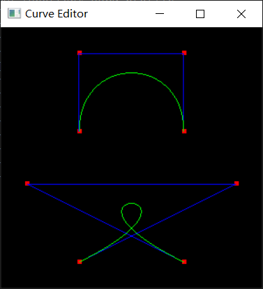
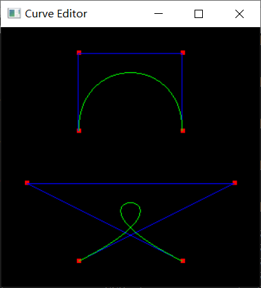
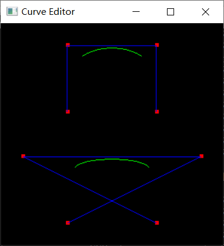
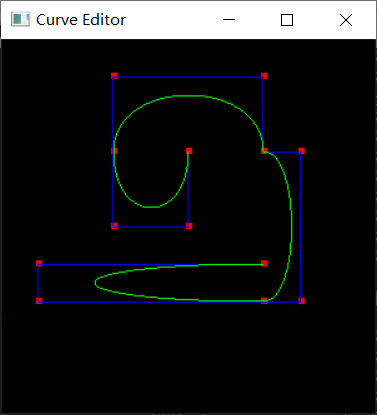
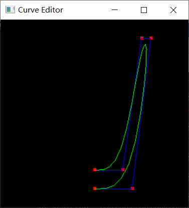

曲线和曲面Curves & Surfaces
目录结构描述
│ curve_editor.exe
│ list.txt
│ raytracer.exe
│ README.md
│ start.bat
│
├─code
│ arg_parser.h
│ BezierCurve.cpp
│ BezierCurve.h
│ BezierPatch.cpp
│ BezierPatch.h
│ BSplineCurve.cpp
│ BSplineCurve.h
│ Curve.cpp
│ Curve.h
│ glCanvas.cpp
│ glCanvas.h
│ main.cpp
│ matrix.cpp
│ matrix.h
│ Spline.cpp
│ Spline.h
│ spline_parser.cpp
│ spline_parser.h
│ Surface.cpp
│ Surface.h
│ SurfaceOfRevolution.cpp
│ SurfaceOfRevolution.h
│ triangle_mesh.cpp
│ triangle_mesh.h
│ vectors.h
│ work2.cpp
│
├─image
│ error.png
│ image01.png
│ image02.png
│ image03.png
│ image04.png
│ image05.png
│ image06.png
│ image07.png
│ image08.png
│ image09.png
│ image10.png
│ image11.png
│ image12.png
│ patch_high.png
│ patch_low.png
│ patch_med.png
│ teapot_high.png
│ teapot_low.png
│ torus_high.png
│ torus_low.png
│ vase_high.png
│ vase_low.png
│ vase_very_high.png
│
├─input
│ spline01_bezier.txt
│ spline02_bspline.txt
│ spline03_bezier.txt
│ spline04_bspline.txt
│ spline05_bspline_dups.txt
│ spline06_torus.txt
│ spline07_vase.txt
│ spline08_bezier_patch.txt
│ spline09_teapot.txt
│
└─output
output01_bezier.txt
output01_bspline.txt
output02_bezier.txt
output02_bspline.txt
output07_edit.txt
patch_high.obj
patch_low.obj
patch_med.obj
teapot_high.obj
teapot_low.obj
torus_high.obj
torus_low.obj
vase_high.obj
vase_low.obj
vase_very_high.obj
快速开始
环境需求
需要glut32.dll
确保glut32.dll在环境路径中（对于64位一般在C:\Windows\SysWOW64\中）
如果版本不同可能会导致运行失败
开始
运行 start.bat
由于环境原因，在我的电脑上raytracer会报错，实际需要raytracer的部分使用3D查看器完成
与其他同学讨论与合作
无
特别有助于你完成作业的参考资料
计算机图形学 [(美)Peter Shirley等著 高春晓，赵清杰，张文耀译][人民邮电出版社][2007][409页][11840287]
已知问题
无
附加题
无
意见
无
部分核心代码
Bspline输出Bezier
void BSplineCurve::OutputBezier(FILE* file)
{
float Be[16] = { -1,3,-3,1,3,-6,3,0,-3,3,0,0,1,0,0,0 };
float Bs[16] = { -1,3,-3,1,3,-6,0,4,-3,3,3,1,1,0,0,0 };
for (int i = 0; i < 16; i++)
{
Bs[i] /= 6;
}
Matrix Bezier(Be);
Matrix BSpline(Bs);
float G1[16] = { vArr[0].x(),vArr[1].x(),vArr[2].x(),vArr[3].x(),vArr[0].y(),vArr[1].y(),vArr[2].y(),vArr[3].y(),0,0,0,0,0,0,0,0 };
Matrix Geometry(G1);
Matrix G2;
if (Bezier.Inverse())
{
G2 = Geometry * BSpline * Bezier;
}
fprintf(file, "bezier\n");
fprintf(file, "num_vertices 4\n");
for (int i = 0; i < 4; i++)
{
fprintf(file, "%f %f 0\n", G2.Get(i, 0), G2.Get(i, 1));
}
}
Bezier输出Bspline
void BezierCurve::OutputBSpline(FILE* file)
{
fprintf(file, "bspline\n");
fprintf(file, "num_vertices 4\n");
float Be[16] = { -1,3,-3,1,3,-6,3,0,-3,3,0,0,1,0,0,0 };
float Bs[16] = { -1,3,-3,1,3,-6,0,4,-3,3,3,1,1,0,0,0 };
for (int i = 0; i < 16; i++)
{
Bs[i] /= 6;
}
Matrix Bezier(Be);
Matrix BSpline(Bs);
float G1[16] = { vArr[0].x(),vArr[1].x(),vArr[2].x(),vArr[3].x(),vArr[0].y(),vArr[1].y(),vArr[2].y(),vArr[3].y(),0,0,0,0,0,0,0,0 };
Matrix Geometry(G1);
Matrix G2;
if (BSpline.Inverse())
{
G2 = Geometry * Bezier * BSpline;
}
for (int i = 0; i < 4; i++)
{
fprintf(file, "%f %f 0\n", G2.Get(i, 0), G2.Get(i, 1));
}
}
添加控制点
void BSplineCurve::addControlPoint(int selectedPoint,float x,float y)
{
Vec3f temp(x, y, 0);
vArr.insert(vArr.begin() + selectedPoint, temp);
num++;
}
删除控制点
void BSplineCurve::deleteControlPoint(int selectedPoint)
{
if (num <= 4)
{
return;
}
vArr.erase(vArr.begin() + selectedPoint);
num--;
}
输出三角网
TriangleMesh* BSplineCurve::OutputTriangles(ArgParser* arg)
{
int curve_tessellation = arg->curve_tessellation;
int revolution_tessellation = arg->revolution_tessellation;
int cnum = curve_tessellation * (num-3)+1;
TriangleNet* tri = new TriangleNet(revolution_tessellation + 1, cnum - 1);
vector<Vec3f> arr;
Vec3f temp;
for (double j = 0; j < vArr.size() - 3; j++)
{
for (double i = 0; i <= curve_tessellation; i++)
{
double t = i / num;
double a1 = pow(1 - t, 3);
double a2 = 3 * t * t * t - 6 * t * t + 4;
double a3 = -3 * t * t * t + 3 * t * t + 3 * t + 1;
double a4 = t * t * t;
double x = a1 * vArr[j].x() + a2 * vArr[j + 1].x() + a3 * vArr[j + 2].x() + a4 * vArr[j + 3].x();
double y = a1 * vArr[j].y() + a2 * vArr[j + 1].y() + a3 * vArr[j + 2].y() + a4 * vArr[j + 3].y();
x /= 6;
y /= 6;
temp.Set(x, y, 0.0);
arr.push_back(temp);
}
arr.pop_back();
}
arr.push_back(temp);
for (int i = 0; i < cnum; i++)
{
Vec3f t(arr[i].x(), arr[i].y(), arr[i].z());
for (int j = 0; j <= revolution_tessellation + 1; j++)
{
double angle = 360.0 / revolution_tessellation / 180 * M_PI;
//float t1[16] = { t.x(),t.y(),t.z(),1,0,0,0,0,0,0,0,0,0,0,0,0 };
//float t2[16] = { cos(angle),0,-sin(angle),0,0,1,0,0,sin(angle),0,cos(angle),0,0,0,0,1 };
//Matrix temp1(t1);
//Matrix temp2(t2);
//Matrix temp3 = temp1 * temp2;
double x = t.x() * cos(angle) + t.z() * sin(angle);
double y = t.y();
double z = t.x() * -1.0 * sin(angle) + t.z() * cos(angle);
tri->SetVertex(j, i, t);
//t.Set(temp3.Get(0,0),temp3.Get(1,0),temp3.Get(2,0));
t.Set(x, y, z);
}
}
return tri;
}
示例输出
这里的事例输入需要文件在同一目录下。
curve_editor -input spline01_bezier.txt -gui -curve_tessellation 30

curve_editor -input spline02_bspline.txt -gui -curve_tessellation 30

curve_editor -input output01_bezier.txt -gui -curve_tessellation 30

curve_editor -input output01_bspline.txt -gui -curve_tessellation 30

curve_editor -input output02_bezier.txt -gui -curve_tessellation 30

curve_editor -input output02_bspline.txt -gui -curve_tessellation 30

curve_editor -input spline03_bezier.txt -gui -curve_tessellation 30

curve_editor -input spline04_bspline.txt -gui -curve_tessellation 30

curve_editor -input spline05_bspline_dups.txt -gui -curve_tessellation 30

curve_editor -input spline06_torus.txt -curve_tessellation 4 -gui

由于我的环境运行不了raytracer会报错

所以都是用win10自带的3D查看器查看的
torus_low.obj

torus_high.obj

curve_editor -input spline07_vase.txt -curve_tessellation 4 -output_bspline output07_edit.txt -gui

这里有一个加点拖拽成一个花瓶的线，我由于上次没有保存这个图，就不拖了，直接看obj格式的吧。。有点手残
vase_low.obj

vase_high.obj

vase_very_high.obj

patch_low.obj

patch_med.obj

patch_high.obj

curve_editor -input spline09_teapot.txt -curve_tessellation 4 -gui

teapot_low.obj

teapot_high.obj

因为raytracer用不了，所以后面两个图看不了